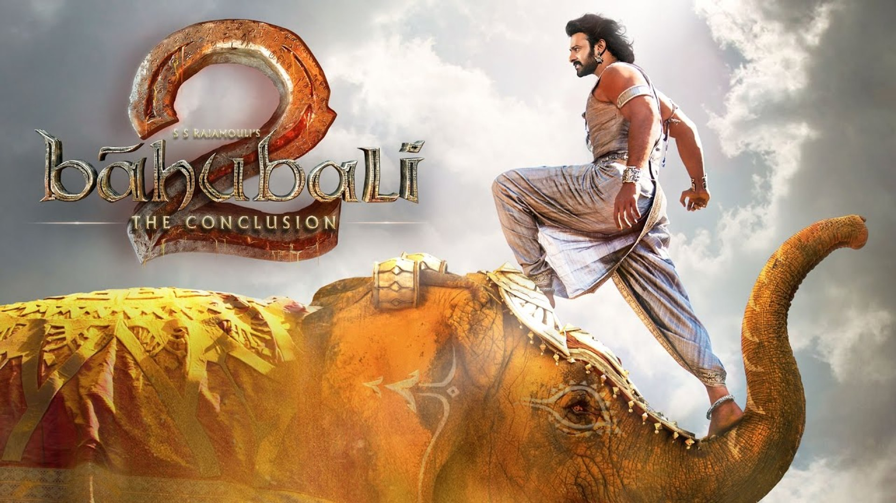
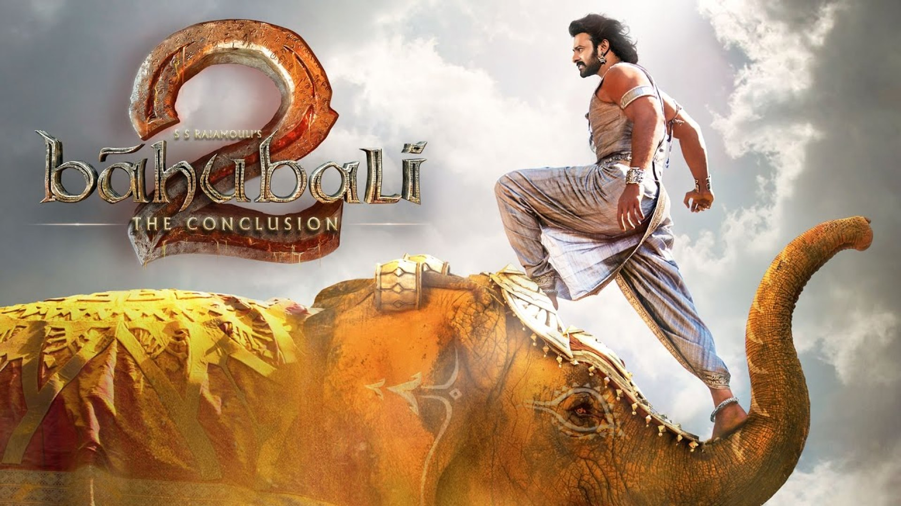

This movie is divided into two parts, Story starts with
Part 1: A child from the Mahishmati kingdom is raised by tribal people and one day learns about his royal heritage, his father's bravery in battle and a mission to overthrow the incumbent ruler. It's a tale of two cousins in the Kingdom of Mahishmati, India. Balla fights his way with cousin Bahubali for the throne. Click below the youtube icon to watch the trailer of Bahubali.
Part 2: Kattappa narrates the story of Amarendra Baahubali to Shivudu, who learns his lineage as the prince of Mahishmati and the son of Amarendra Baahubali. Shivudu, now Mahendra Baahubali, decides to dethrone and punish Bhallaladeva for all wrongdoings of his past with the help of Kattappa.
Amarendra Baahubali, Maharaja Vikramdeva's son and Father of Mahendra Bahubali, was born in Mahishmati. His mother (then Queen Dowager) died while giving birth to him. He was named "Baahubali" by his aunt, Rajamatha Sivagami, who later became his foster mother.
This role was played by Actor Prabhas, A child from the Mahishmati kingdom is raised by tribal people, Mahendra Baahubali was born in Mahishmati on the day his father Amarendra Baahubali was executed by Kattappa and his mother Devasena was held captive by Bhallaladeva
Karikala Kattappa Nadar aka Kattappa is the Commander of the King's royal bodyguard and Capital guards. Though he is a very skilled warrior for the Crown of Mahishmati, Kattapa's forefathers, beginning with Ugrappa, pledged their allegiance and loyalty to the rulers of Mahishmati for their assistance in avenging against Vaithalikas.
Bhallaladeva is the king of Mahishmati. He is a renowned fighter, Sivagami and Bijjaladeva's only child and the older cousin-brother of Amarendra Bahubali. He is envious of Amarendra Baahubali. When he is made King, he relieves Amarendra of his official duties and later convinces Sivagami that Amarendra is trying to assassinate him.

Rajamatha (Queen Mother) Sivagami Devi is the former regent of the Mahishmati kingdom. She is a skilled fighter, feared by her enemies and seen to have thwarted enemies' plots to overthrow the kingdom. She is a true leader who treats everyone equally, including her son and nephew. She is a strong headed leader and the most powerful character in the Baahubali series, who decides the fate of Mahishmati.
Avantika is a skilled warrior and a fighter of the rebel group. Mahendra Baahubali falls in love with her and she later accepts him after she discovers that he climbed the waterfall mountain just for her. As a guerrilla fighter, her life is devoted to a sole mission, saving Devasena from captivity in Mahishmati by Bhallaladeva.
Devasena is the lead female character of the Baahubali franchise along with Sivagami. Princess of Kuntala Kingdom, Devasena is a skilled fighter and a great archer. Amarendra Baahubali falls in love with her during a visit to Kuntala kingdom. Devasena reciprocates in her feelings toward him. She is brave and bold and believes firmly in her decisions, and it is through great practice that she achieves her martial skills. Devasena marries Baahubali.